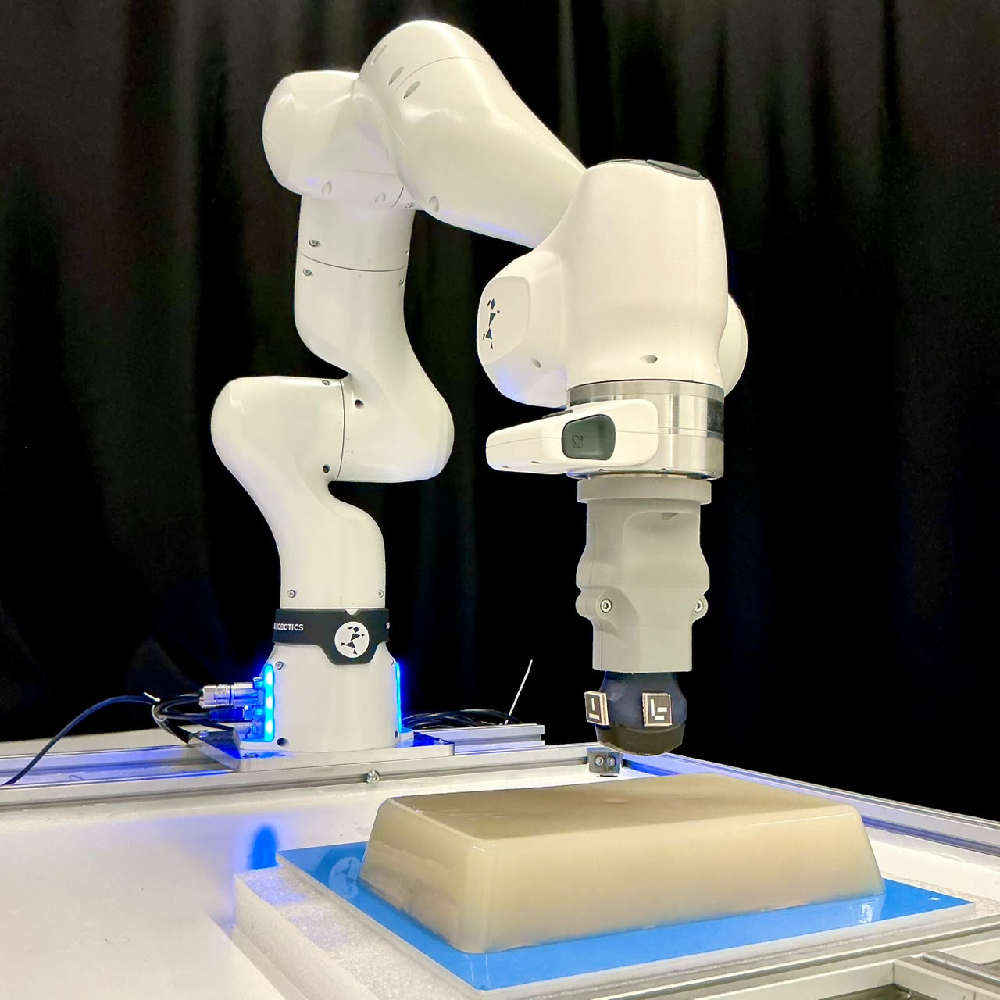

Safe robot-assisted ultrasound imaging requires a reliable controller able to detect and localize probe–tissue interaction. In this paper, we present a B-mode ultrasound image-based contact perception method and a contact-aware impedance controller for robotic ultrasound imaging. The proposed method detects acoustic contact independently of force measurements, enabling contact-conditioned force/torque taring to reduce residual wrench bias. During contact, the method continuously estimates the effective contact location along the curved probe surface and uses it to update the controller interaction frame, enabling visual servoing of the physical probe–tissue contact point during imaging. Experiments on an agar phantom demonstrated a contact-localization RMSE of 1.46 ± 0.14 mm over probe roll angles from −15◦ to 15◦ . During static rolling, the proposed controller maintained task-space tracking accuracy comparable to a conventional fixed-frame impedance controller while reducing the maximum compressive interaction force from 31.56 N to 20.09 N, corresponding to a 36.3% reduction. These results demonstrate the potential of ultrasound images as direct contact feedback for safe and accurate robot-assisted ultrasound imaging.

B-mode ultrasound images are used to detect probe–tissue contact and estimate the effective contact location along the curved probe surface.
The controller updates the controlled contact point during probe rolling, reducing roll-induced loading compared with fixed-point impedance control.
The image-derived contact point is regulated during X- and Y-direction scans at multiple probe orientations.
@article{arefin2026contactaware,
author = {Arefin, Md Miraj and Tiryaki, Mehmet Efe},
title = {Contact-Aware Impedance Controller for Robot-Assisted Ultrasound Imaging},
year = {2026},
}